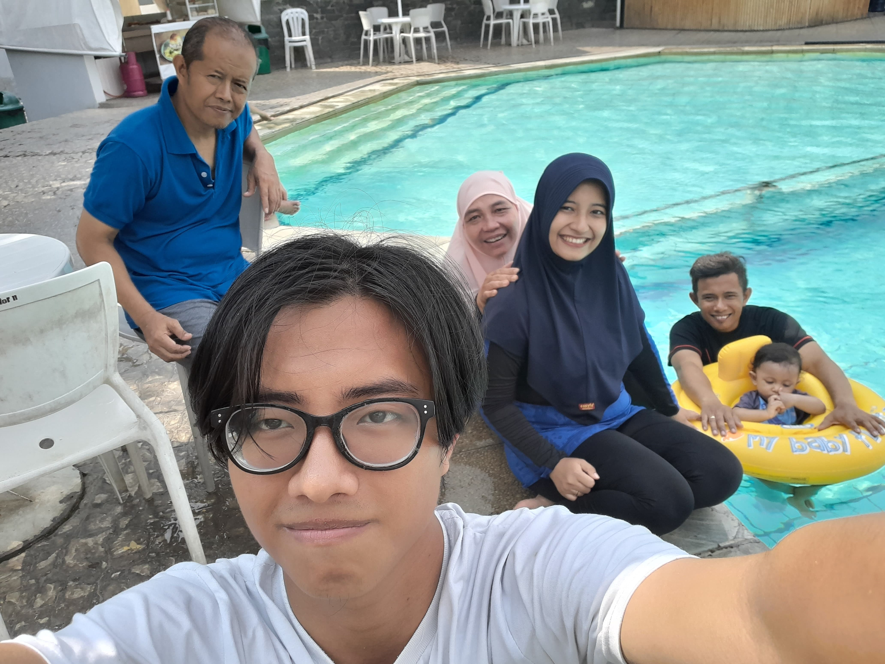
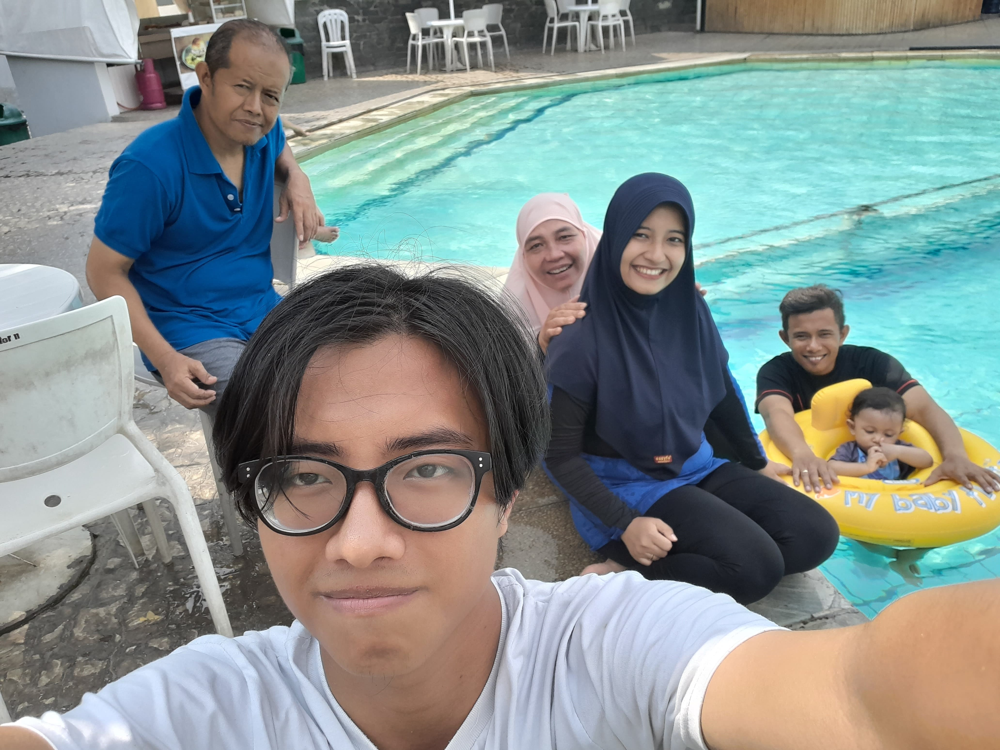
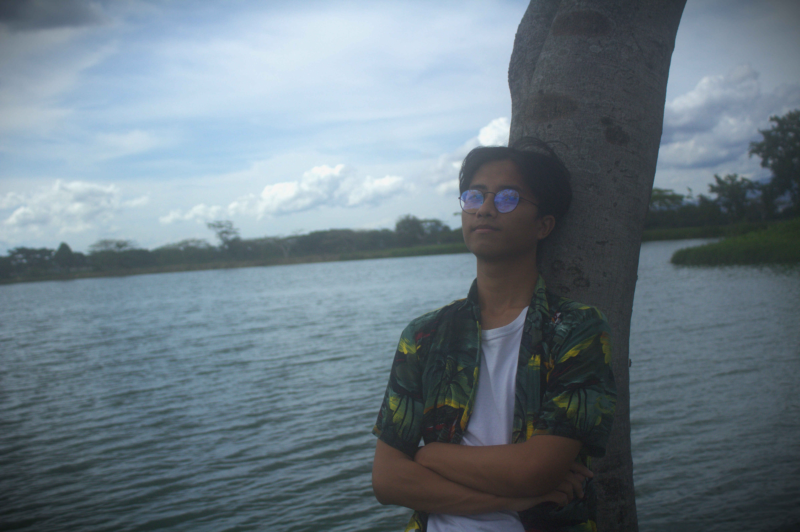
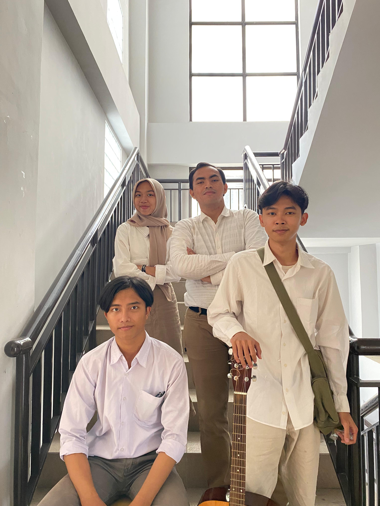
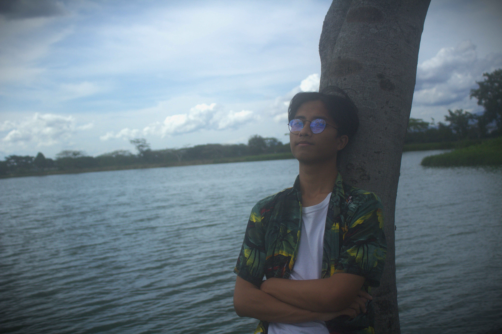
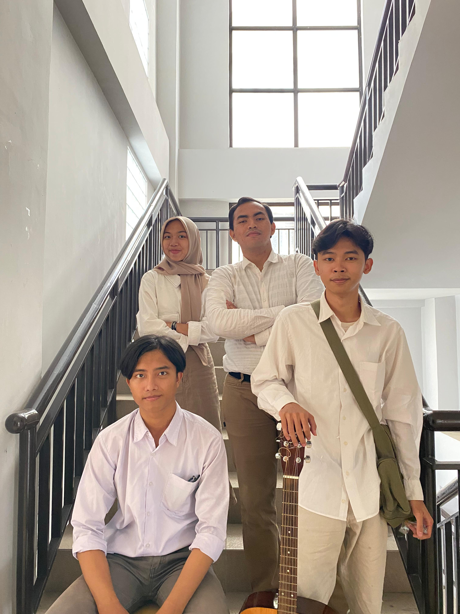

Dig Deep About Ramadhan!!!
My Gallery.

 

 



My Profile.
Brief information about me!!!
Ramadhan Nadhif Firdaus is a dedicated and adaptable undergraduate student currently pursuing a degree in Library and Information Science, Faculty of Education, Universitas Pendidikan Indonesia driven by a deep passion for information management and communication. Born in Bandung on November 15, 2003 with two siblings makes my position in the family as the youngest child. But unlike most other youngest children who prefer to stay in their comfort zone, I prefer things that are explorative and not monotonous so hiking and traveling are things that I really like.
My Fam!
This is my happy family!.
I have a supportive and accomplished family. My father, Yudi Siswandi, works at PT Pindad Persero, a well-known state-owned enterprise, while my mother, Yani Kustini, serves as a civil servant in the Indonesian Army (TNI AD). I have an older sister, Clarissa Yudiani, who is married to Rendika Noviardi, a civil servant in the regional government. Together, they have a wonderful daughter, my niece, Aretha Gresha, who brings so much happiness to our family.
About My Fam!:

My Parents
Yudi Siswandi & Yani Kustini
Yudi Siswandi is a hardworking father who works in the field of War Vehicle Design at PT Pindad Persero, he then met Yani Kustini in Bandung who later married in 1997 and was blessed with two children.

My Siblings
Clarissa Yudiani & Rendika Noviardi
Clarissa Yudiani is an independent sister who works in a local government agency, where she met her husband, Rendika Noviardi and later married with one child.

My Cousin
Aretha Gresha
A daughter born in 2022 with her cute face and cuteness brought a little happiness to our family.
My Hobby.
I Always Waited a New Journey!!!
I love outdoor activities with dynamic activities, so hiking and traveling are my most passionate hobbies. By doing both hobbies, I can gain new experiences every time I do them and make a very valuable impression on my life.